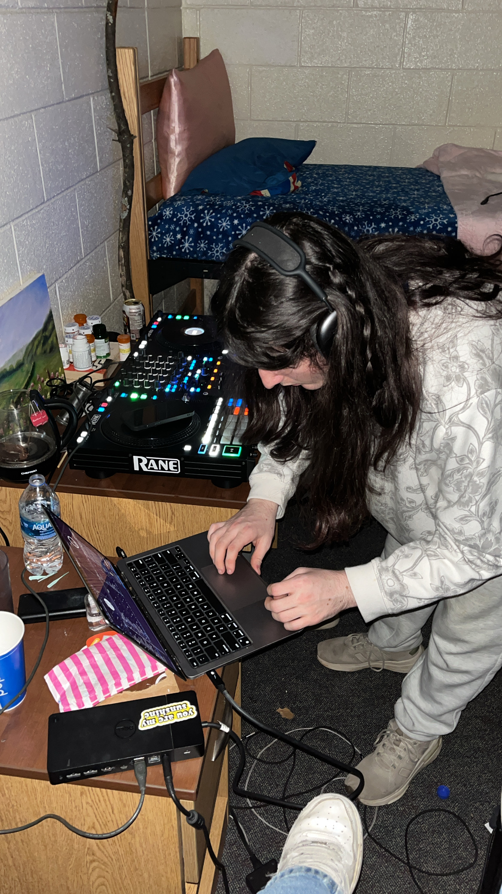
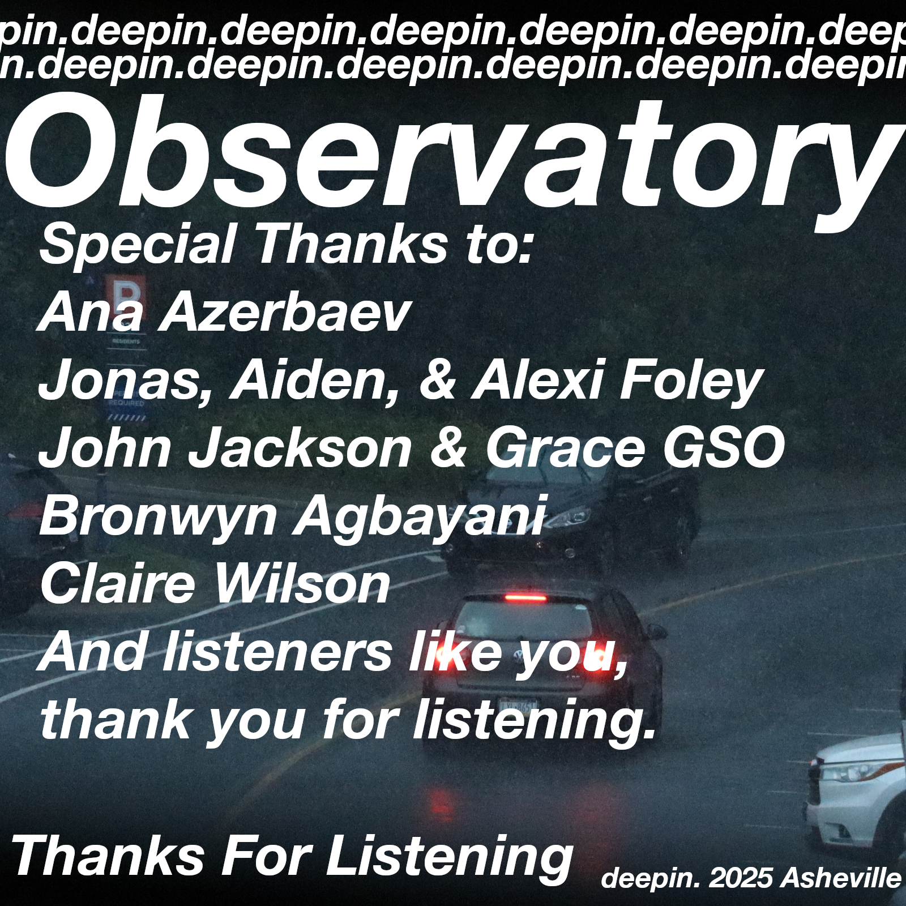
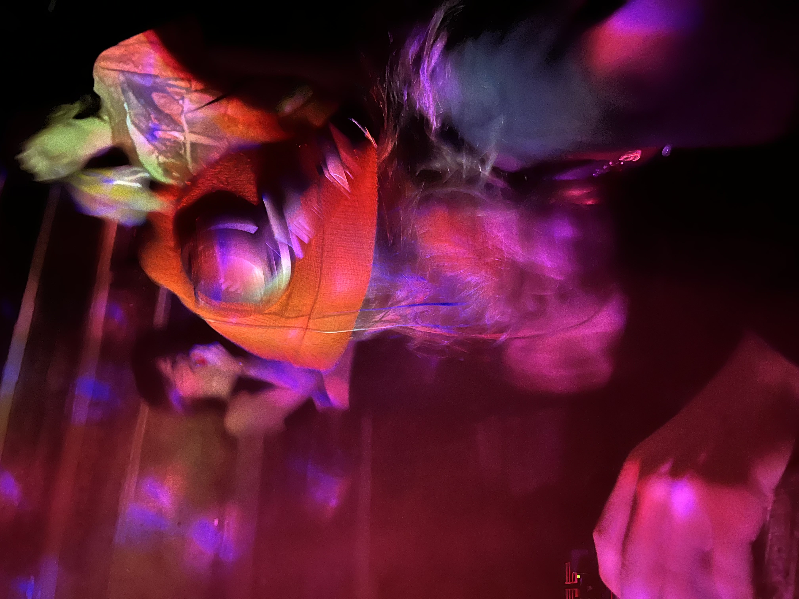

deepin.
Inspired by the early 2000s UK DNB scene, deepin has a fondness for breaks, and all things rolling. Thanks for listening.
Links & Work
Showcase



Inspired by the early 2000s UK DNB scene, deepin has a fondness for breaks, and all things rolling. Thanks for listening.


